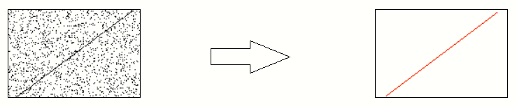
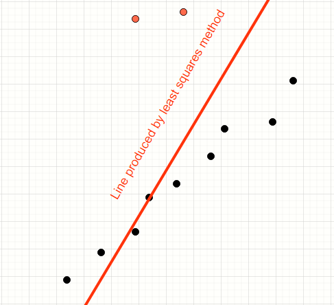
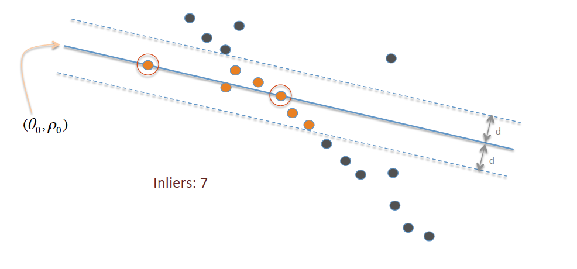
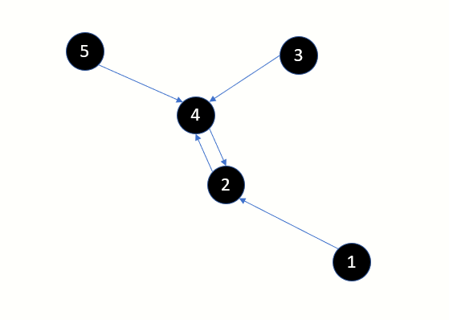
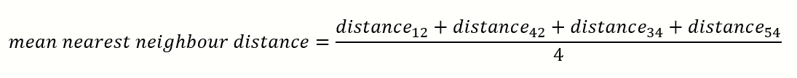
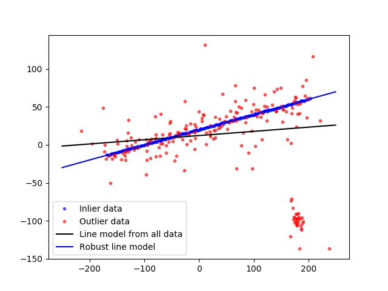
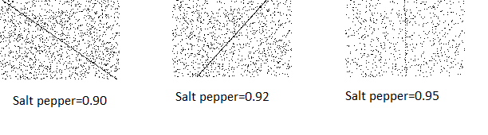
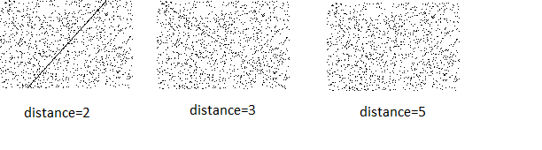
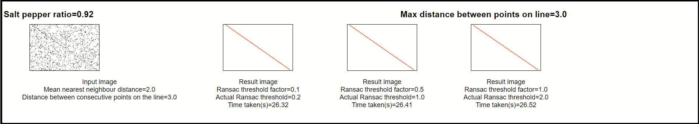

Nearest neighbour distance metric approach to determine the RANSAC threshold

Introduction
The RANSAC algorithm is a very robust and a well established approach to determinine the straight line(s) which fit a noisy set of data points.
In this article I have explored the possiblity of using the Nearest Neighbour Distance statistic
as a means of arriving at the RANSAC threshold distance parameter
What problem does the RANSAC algorithm solve?
Consider the data points below.
We have a mix of inliers (black) and outliers (red). We want to find the model of the straight line which fits the inliers.
The human mind can easily distinguish the inliers from the outliers and produce a line which neatly fits all the inliers.

RANSAC is a simple voting-based algorithm that iteratively samples the population of points and find the subset of those lines which appear to conform to a model. In this case, the model is a straight line.

Least squares method will encompass all points thereby producing a line which is away from the desired line

How does the RANSAC algorithm work?
This is not a detailed discussion on RANSAC.

Copyright information for this image can be found here
- Pick any N random points from the entire population
- Find the line using Least Squares which fits the N points
- Find all points which are inliers to this new line. Inliers are points which are within threshold distance 'd' of the line
- Repeat the above for a configured number of trials.
- The line which produces the highest inliers is the winnder
Detailed working of the RANSACA can be found in this Wikipedia article
and my article on Medium .
What problem are we attempting to address in this article?
How do we determine the optimum RANSAC threshold parameter 'd'?

-
If the threshold is too large then the RANSAC algorithm will produce a line which has encompassed potential outliers.
-
If the threshold is too small then the RANSAC algorithm might not find anything at all.
What is the the intuition behind Nearest Neighbour Distance?
What is Nearest Neighbour Distance (NNE)?
Consider the points displayed in this image. By definition, every point has 1 one point which is closest. You could have multiple points which are equidistant and hence multiple nearest neighbours. But for this discussion we will pick the closest neighbour.

-
Point 2 is the nearest neighbour of point 1
-
Point 2 is the nearest neighbour of point 4 and vice-versa
-
Point 4 is the nearest neighbour of point 3
-
Point 4 is the nearest neighbour of point 5

What was the inspiration for using NNE distance?
The NNE statistic gives us an idea of how close or spread out the data points are.
The RANSAC threshold distance parameter must have some correlation with the mean or median NNE.
How to calculate the the nearest neighbour distance using scikit-learn?
scikit-learn provides the excellent class KDTree
import numpy as np
rng = np.random.RandomState(0)
X = rng.random_sample((10, 3)) # 10 points in 3 dimensions
tree = KDTree(X, leaf_size=2)
dist, ind = tree.query(X[:1], k=3)
print(ind) # indices of 3 closest neighbors
print(dist) # distances to 3 closest neighbors
How to implement RANSAC algorithm using scikit-learn?
There are 2 classes that can be used. I have used the implementation from scikit-image for this article
-
scikit-learn provides the class RANSACRegressor
-
scikit-image provides the class ransac. Sample snippet from the web site is reproduced below.

import numpy as np
from matplotlib import pyplot as plt
from skimage.measure import LineModelND, ransac
np.random.seed(seed=1)
# generate coordinates of line
x = np.arange(-200, 200)
y = 0.2 * x + 20
data = np.column_stack([x, y])
# add faulty data
faulty = np.array(30 * [(180., -100)])
faulty += 5 * np.random.normal(size=faulty.shape)
data[:faulty.shape[0]] = faulty
# add gaussian noise to coordinates
noise = np.random.normal(size=data.shape)
data += 0.5 * noise
data[::2] += 5 * noise[::2]
data[::4] += 20 * noise[::4]
# fit line using all data
model = LineModelND()
model.estimate(data)
# robustly fit line only using inlier data with RANSAC algorithm
model_robust, inliers = ransac(data, LineModelND, min_samples=2,
residual_threshold=1, max_trials=1000)
outliers = inliers == False
# generate coordinates of estimated models
line_x = np.arange(-250, 250)
line_y = model.predict_y(line_x)
line_y_robust = model_robust.predict_y(line_x)
fig, ax = plt.subplots()
ax.plot(data[inliers, 0], data[inliers, 1], '.b', alpha=0.6,
label='Inlier data')
ax.plot(data[outliers, 0], data[outliers, 1], '.r', alpha=0.6,
label='Outlier data')
ax.plot(line_x, line_y, '-k', label='Line model from all data')
ax.plot(line_x, line_y_robust, '-b', label='Robust line model')
ax.legend(loc='lower left')
plt.show()
Going deeper into the implementation
Step 1 - Generate noisy images with various salt pepper ratios
To determine the robustness of an algorithm it is vital that we test our code against various degrees of salt and pepper noise.
For this article, I have selected the salt-pepper ratios 0.90, 0.92, 0.95, 0.97 and 0.99.

Every image will have a dotted line.
This dotted line will be the target that we expect the RANSAC algorithm to discover.
To further increase the complexity of the challenge we will test lines drawn with various degrees of sparseness.
The further apart the points, the more sparse the line and greater the challenge.
For this article, I have selected the values 2,5,7 and 10

The file SaltPepperNoise.py is responsible for generating the noisy images.
Step 2 - Running the RANSAC algorithm
The file ExecuteRansac.py is responsible for crunching the input images produced in the previous step.
In this step we use the median Nearest Neighbour distance to arrive at the RANSAC threshold.
For every input image we will experiment with different RANSAC threshold parameters. The RANSAC threshold parameter is arrived at by
multiplying a threshold factor with the median Nearest Neighbour distance.
The RANSAC line is superimposed over the original image.
Step 3 - Displaying the results
Finally, we want to render the overall results in a manner which lets us arrive at meaningful conclusions.
The script PlotResultsSideBySide.py will crunch the input images and result
images produced by the above steps into a single HTML file. Example below:

Results - When image contains a one line (TO BE DONE)
Different images (SP,MAXD) vs THRESHOLD (factor * mean nne)

Results - When image contains two lines
Different images (SP,MAXD) vs THRESHOLD (factor * mean nne)
Accompanying source code
Folder structure
The accompanying code is divided into a top level folder which contains executable Python files and inner folders which contain reusable Python classes:
Executable Python files
- SaltPepper.py-Generates noisy images with a dimensions 100X150 using the specified random salt pepper noise, one dotted line with the specified distance between consecutive points
- ExecuteRansac.py-Executes the RANSAC algorithm on all image files that were generated by SaltPepperNoise.py
- PlotResultsSideBySide.py- Generates a single HTML file with noisy images and result images side by side
Reusable Python classes
- algorithm-Wrapper classes that abstract the implementation of RANSAC
- data-Data contract classes that faciliate writing and reading results to/from CSV
- htmlgenerator-Produces a HTML display by combining data from the CSV file generated by SaltPepper.py and ExecuteRansac.py
- tests-All unit tests
Github
Source code for this article can be found in the ransac_threshold_nne_distribution of the Github repository
How to generate noisy images?
explain which file, what to run
explain the folder structure of the results
How to run the RANSAC algorithm?
Explain ExecuteRansac
How to display the results?
Explain PlotResultsSideBySide
Show a tiny pic of the overall HTML presentation
Putting it all together(TO BE DONE)
Bring some of the above stuff here. Avoid repetition
Summarize the steps in the right sequence.
Show pictures of folders getting created
Show pictures of prompts
Show pictures of results folder getting generated
Repeat thumbnail of HTML
References
Provide links to important videos, e.g. RANSAC on youtube, wikipedia and some of my articles